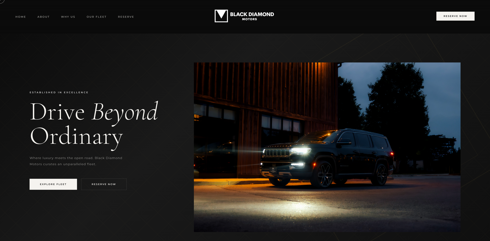

Engineer & Entrepreneur · Toronto, ON · 2026
Student · Builder · Entrepreneur
I build real things for real clients. I'm driven by engineering, fascinated by technology, and drawn to the intersection where systems thinking meets creative execution.
Featured Project · 2026
A full luxury car rental website, designed and built from scratch — now live as the company's official digital presence.

Client
Black Diamond Motors
Scope
Full Website Build
Stack
HTML · CSS · JavaScript
Status
Live & Official
A real client.
A real brief.
A real outcome.
Black Diamond Motors is a premium car rental company based in Toronto. When they approached me, they had no website — just a fleet of luxury vehicles and a reputation built entirely through Turo and word of mouth. They needed a digital presence that matched the calibre of the cars they rent.
I designed and developed the entire site from scratch: a cinematic hero with animated vehicle showcases, a fleet browser loaded from structured data, a reservation flow, client testimonials, and a mobile-first responsive layout — all in semantic HTML, CSS, and vanilla JavaScript.
"The Black Diamond Motors team adopted this as their official website. It's live today, represents their brand, and real customers navigate it every day."
See the Breakdown ↓Project Breakdown
01 · Problem
Black Diamond Motors had a strong fleet and loyal customers but no website to reflect that. Potential clients couldn't find them beyond Turo, and there was no way to tell their brand story. The business was growing — its digital identity wasn't.
02 · Solution
I built a full multi-page website from scratch with a dark luxury aesthetic, animated vehicle showcases, a data-driven fleet browser, a reservation flow, real client testimonials, and a fully responsive mobile layout — all in pure HTML, CSS, and JavaScript.
03 · Impact
The client adopted the site as their real, live digital presence — not a prototype, not a mock-up. It now attracts new customers and presents their fleet professionally. Working through multiple revision cycles with a real client shaped how I approach every project since.
Process
I don't use AI as a shortcut. I use it as an accelerant — a way to move faster through the parts that slow learning, so I can spend more time on the work that actually requires judgement, creativity, and craft.
01 · Learning
I use AI to break down concepts I haven't encountered before — asking it to explain the same idea multiple ways until something clicks. It works like a patient tutor available at 2 AM when I'm deep in a problem.
02 · Debugging
When something breaks, I describe the behaviour and share relevant code. AI helps me narrow down the source of an issue quickly — but I always understand the fix before applying it. Black-box solutions don't stick.
03 · Development
I use AI to help plan structure and generate boilerplate, then I write, refine, and own the final code myself. It accelerates the early stages without replacing the thinking required to ship quality work.
04 · Research
Before building anything, I use AI to survey the landscape — comparing approaches, weighing tradeoffs, identifying the right tools for the context. It helps me make informed decisions faster than reading docs alone.
05 · Design
I use AI to pressure-test visual and product directions — exploring alternatives I might not have considered. It's a way to iterate faster on ideas before committing time to execution. The final call is always mine.
"AI doesn't replace the thinking —
it amplifies what you already bring to the table."
A Principle I Work By
Every tool I use — AI included — is only as good as the judgment behind it. Learning to ask the right questions, know what a good answer looks like, and own the output entirely is what separates someone who uses AI from someone who depends on it.
Reflections
Four things this project taught me that no course has.
01
Real projects don't come with perfect specifications. Working with Black Diamond Motors meant translating vague creative direction — "make it feel premium, like the cars" — into concrete design decisions. That gap between intent and execution is where real engineering thinking happens, and no tutorial teaches you to work in it.
02
Presenting creative work to a real client is a different skill from building it. I learned to explain technical decisions in plain terms, receive feedback without ego, and push back constructively when a suggestion conflicted with the user experience. Communication is at least half the job — in engineering and in business.
03
The first version is never the final version. I went through multiple design revisions — each one informed by real feedback rather than personal preference. I learned to detach from initial ideas and follow what the work actually needs. This is what separates a builder from an artist.
04
Building something a real business depends on is fundamentally different from a school project. Knowing actual customers would land on this site changed how carefully I tested, how thoroughly I refined details, and how seriously I took ownership. Real stakes produce real growth — and they showed me I thrive under that kind of pressure.
Capabilities
Technical
Non-Technical
About Me
I'm a student developer based in Toronto with a deep interest in how things work — mechanically, electrically, and digitally. My goal is to study engineering, whether that's Mechanical, Electrical, or Mechatronic, because I want to build things that exist in the real world, not just on a screen.
Alongside engineering, I'm drawn to entrepreneurship — not as a class, but as a way of thinking. I care about solving real problems, creating real value, and building things people actually use. The Black Diamond Motors project is the first proof of that instinct in action.
Where I'm Headed
Engineering Degree — Mechanical, Electrical, or Mechatronic. I want to understand how systems work at a fundamental level.
Entrepreneurship — Building and launching real ventures. Not necessarily through a business degree — through doing.
Intersection of both — Engineering the product, leading the business. That's the profile I'm building toward.
Get in Touch